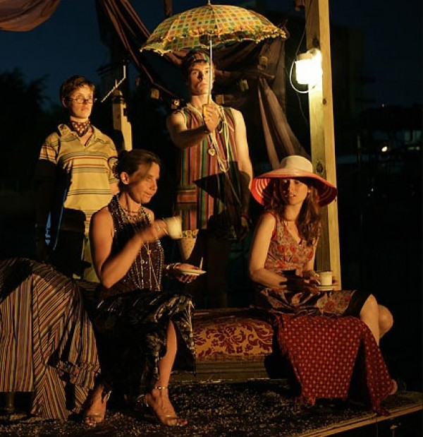
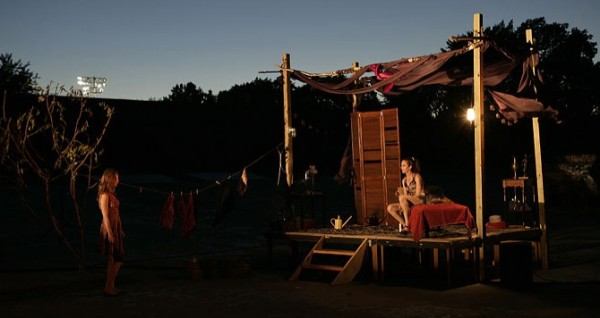

-
Legacy and Re/volution
by Caridad Svich March 3, 2011
Cultural turns mark centuries. At the beginning of the 21st century, a chain of turns gazes at us in the rearview mirrors of linguistics, cultural anthropology, philosophy, visual and performance studies. Look at language patterns as a way to map the world. Excavate rituals and theatrical spectacles to trace what is performative. Concentrate on questions of time and space and geography to understand spatial gravity. Criticize racism and ethnocentrism to mark a place for the post-colonial body. Focus on the importance of iconic references and visual intelligence and see how the world sees through perhaps similar eyes. 19th century concepts of objectivity link themselves to the history and catalog of images and image-making. In the brain, pictures exist to describe complex human statements about happiness and love, guilt and free will and even the sacred and the divine. It has been said to an inordinately exhaustive degree that we live in a visual culture, that we are guided, indeed, by what we see and what we believe based on what we see.
Yet, as continued research in neurobiology exclaims, the way the brain responds to and interprets what is seen is fragile. There is more than a margin of error in how visual perception shapes a view of the world. Seeing and witnessing are different things. If there is a civil contract to framing an event through art, or through more instantaneous and less obviously tutored practices of capturing the real and its losses via, for example, a digital camera phone, then the act of seeing is an act of citizenship. How we choose to see, what we decide is seen or not is linked inexorably to civic responsibility and the manner in which individuals and societies address cultural grievance, misery and urgency. There is an ethics to seeing. It is not an even or equal playing field. The fragmented, post-post-modern self, however, collapses acts of seeing and doing –and ethical witnessing and action – as the boundaries among work, leisure and place continue to erode. A YouTube music parody co-exists in the brain alongside a Presidential address and a photograph or digital capture of a bombing in Gaza. The brain sorts through images and filters patterns of shapes and colors. Memory catches flashes of real and desired feeling, and grafts upon these shapes and colors, superimposed personal images altered by the unreliability and digressive quality of remembering. It is perhaps ironic, then, that the last two centuries of cultural turns have focused so much on visual culture and its interpretation, and that science and technology have devoted so much research and energy to the development of progressively sophisticated information and entertainment devices (not to mention surveillance and military devices) geared to the visual imagination. I say ironic because it is quite evident (to paraphrase Swiss sociologist Peter Atteslander) that “We only believe what we see, and we only see what we want to believe.”
Now, I am not suggesting that visual culture and its interpretation should be ignored. It would be jejune and ridiculous of me, especially in the context of thinking about or analyzing theatrical signs and how they operate in the field of live performance. What I am asking is for us to listen as well as to see, and to begin to take in what is possibly the 21st century cultural turn: the acoustic turn.
In 2005, scientists from Humboldt University in Berlin met researchers from Princeton to discuss “sound politics – an acoustic turn in cultural and media studies.” This turn refers to the delicate interaction of the sense of sight and hearing in culture and society. Embedded within is a critique of how sight has been inordinately privileged in cultural criticism, and how this has diminished attention towards acts of listening and their interpretation.
In the nowhere/everywhere of the globalized boom-and-bust body, visual signs have nearly obliterated (and I am deliberately exaggerating here to make a point) the capacity to listen: turning the ear and the mind to the language(s) beneath the signs offered by contemporary complexes of power. Staggering about in a socially inequitable landscape, the individual within the crowd tries desperately to get by as catastrophe rears its necessary head to allow this new turn to occur. Mired in infinitesimal blips, bytes and attention-grabbing minutes of downloadable images and sounds of amusement, disaster and virtual human connections, the individual is prized away from the crowd, away from movement, and into a heady and sometimes ecstatic stupor of infinite internal possibility – one that denies true transformation and evolution.
We want revolution in our lives. We want change. The words ring in our ears. The sounds echo across time, but what kind of revolution do we seek?
John Berger in his book Hold Everything, Dear: Dispatches on Survival and Resistance states that
the promise of a movement is its future victory; whereas the promises of incidental moments are instantaneous. Such moments include, life-enhancingly or tragically, experiences of freedom in action. (Freedom without actions does not exist.) Such moments – as no historical ‘outcome’ can ever be – are transcendental, are what Spinoza termed eternal, and they are as multitudinous as the stars in an expanding universe. Not all desires lead to freedom, but freedom is a desire being acknowledged, chosen and pursued. Desire never concerns the mere possession of something, but the changing of something. Desire is a wanting. A wanting now.
The wanting that ignites political action is often tethered to immediate outcome and a temporary restructuring of social institutions, but revolution demands the transformation of the actual structure of a society. Revolution demands acute listening and witnessing to the morphic resonances that abound in culture and nature – in the eco-systems of a planet in flux.
How to stage a revolution in our theaters? What legacies are left us in the 21st century as we listen to those who came before us? How is the structure of a society understood? And is our theater reflective of that level of understanding?
My questions here have less to do with technical advances in the disciplines of design and engineering, and more to do with the philosophical foundations of how we see and how we hear in culture – what we choose to see and hear and not. Ethics again. Yes. Civic responsibility. Spiritual responsibility.
Much time is devoted to discussion of the instantaneous desires for immediate change in our theaters, especially in regard to the family story that is encoded in the struggle for expression of cultural difference. Here I am talking about the family story writ large as the story of a culture: who is parent, child, and whose identity is acknowledged at the family table. The political impetus behind the quest for expression of difference is important, of course – it is related to what is seen and what is not, who records the stories told, or not, through whispers, secrets, murmurs, and songs sung when one is disallowed to speak. Class, you see. To speak of cultural difference without speaking about class sentimentalizes social conflict and reduces struggle to just another family story: a sentimental drama centered on the desire for approval, and not the desire for freedom in action and for an active engagement with the world.
The family story (writ large) has hijacked much of the conversation around cultural difference and the kinds of stories that can or cannot be told in many of our theaters. The condition of approval appears in nearly every conversation taking to task the mismanagement of spiritual ideals by intelligent but compromised directors at institutions large and small: the mismanagement of the ecology of a living, breathing theater that speaks locally of the global and vice versa. “See me” is the ongoing refrain that runs through conversations that span forty-plus years of debate, argument, protest and movements dedicated to the visibility of society’s neglected artist children and adults. The gaze aims outward, sometimes inward, but mostly outward, and power – the elusive magnet tied to capitalism and its arteries of consumption – is often the target rather than the deflecting point by which to re-center and re-think social structures in which our theaters (not our buildings) exist.
The triumph of neo-liberalism at the end of the 20th and the beginning of the 21st centuries cannot be understood only as a move to the Right that can be reversed by re-polarizing politics according to an earlier mode of government policies. Similarly, undoing or merely re-polarizing the way decision-making has been policy in many arts institutions will not deliver necessary evolution. The “see me” which begs for the gaze to be returned might be better replaced by the demand to be heard.
Individuals in society take stock in buildings: in glorious edifices that speak of power but not often to it. Glamour can blind even the most dedicated evolutionary with its artful bewitchment. But science teaches us that hearing may indeed have new relevance in many cognitive contexts (scientific, medical and economic). Image does not supersede what is heard. Perception lies in the ears as well as the eyes and other senses. Revolution asks that the individual move outside themselves and into the din of the crowd: to listen to the fabric of multiple lives. Only through this listening can the chain of implications be re-wrought, re-made, re-fashioned out of new cloth, steel, breath and song.
Before history had a name. Before the gaze was averted and a subject was made of ruin. After seemingly countless genocides and atrocities, bankruptcy is commonplace, and the individuals’ task has been to sift constantly the wreckage of history, to retrace the threads that led us hear in order to envision new cultural myths. In order to envision, however, the recognition of ruin must occur. Its grievances must be uttered into the archives of others, and then released into a memory that picks up the flash of an image, the fragment of a stolen melody, and the thieving blasphemy of prejudice’s bad stain.
Caridad Svich is a playwright, poet, editor, translator, and founder of NoPassport, whose 5th annual conference takes place this week. The preceding was adapted from her keynote address from 2009